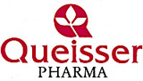

|
 |
 | Препараты, представляемые КВАЙССЕР ФАРМА ГмбХ и Ко. КГ (Германия) | Интересы в России представляет 127018 Москва, Октябрьский пер., д. 8, стр. 1 |
| Торговое название | КФГ | Владелец рег. удостоверения |
| ДОППЕЛЬГЕРЦ® B-КОМПЛЕКС (DOPPELHERZ® B-COMPLEX) таб. | БАД - дополнительный источник витаминов | зарегистрировано |
| ДОППЕЛЬГЕРЦ® KINDER МУЛЬТИВИТАМИНЫ ДЛЯ ДЕТЕЙ (DOPPELHERZ® KINDER MULTIVITAMINS FOR CHILDREN) таб. шипучие | БАД - дополнительный источник витаминов и минеральных веществ | зарегистрировано |
| ДОППЕЛЬГЕРЦ® KINDER ОМЕГА-3 ДЛЯ ДЕТЕЙ С 7 ЛЕТ (DOPPELHERZ® KINDER OMEGA-3 FOR CHILDREN FROM 7 YEARS OLD) капсулы | БАД - источник полиненасыщенных омега-3 жирных кислот, витаминов А, D, Е | зарегистрировано |
| ДОППЕЛЬГЕРЦ® V.I.P. АРТРО КОЛЛАГЕН (DOPPELHERZ® V.I.P. ARTHRO COLLAGEN) жидкость | БАД для поддержания функции опорно-двигательного аппарата | зарегистрировано |
| ДОППЕЛЬГЕРЦ® АКТИВ ВИТАМИН C + ЦИНК (DOPPELHERZ® AKTIV VITAMIN C + ZINC) таб. шипучие | БАД для повышения иммунной защиты организма с общеукрепляющим действием | зарегистрировано |
| ДОППЕЛЬГЕРЦ® АКТИВ ВИТАМИН D 1000 МЕ (DOPPELHERZ® AKTIV VITAMIN D 1000 ME) таб. | БАД - дополнительный источник витамина D3 | зарегистрировано |
| ДОППЕЛЬГЕРЦ® АКТИВ ВИТАМИНЫ ДЛЯ БОЛЬНЫХ ДИАБЕТОМ (DOPPELHERZ® AKTIV VITAMINS FOR DIABETICS) таб. | БАД - дополнительный источник витаминов и минеральных веществ | зарегистрировано |
| ДОППЕЛЬГЕРЦ® АКТИВ ВИТАМИНЫ ДЛЯ ГЛАЗ С ЛЮТЕИНОМ И ЧЕРНИКОЙ (DOPPELHERZ® AKTIV VITAMINS FOR EYES WITH LUTEIN AND BLUEBERRY) капсулы | БАД для поддержания функции органа зрения | зарегистрировано |
| ДОППЕЛЬГЕРЦ® АКТИВ ВИТАМИНЫ ДЛЯ ГЛАЗ С ХРОМОМ, ЦИНКОМ И СЕЛЕНОМ (DOPPELHERZ® AKTIV VITAMINS FOR EYES WITH CHROMIUM, ZINC AND SELENIUM) капсулы | БАД для поддержания функции органа зрения | зарегистрировано |
| ДОППЕЛЬГЕРЦ® АКТИВ ВИТАМИНЫ ДЛЯ ЗДОРОВЫХ НОГТЕЙ И ВОЛОС (DOPPELHERZ® AKTIV VITAMINS FOR HEALTHY NAILS AND HAIR) капсулы | БАД для улучшения состояния волос, кожи и ногтей | зарегистрировано |
| ДОППЕЛЬГЕРЦ® АКТИВ МАГНИЙ + ВИТАМИНЫ ГРУППЫ B (DOPPELHERZ® AKTIV MAGNESIUM + VITAMINS B GROUP) таб. | БАД - дополнительный источник витаминов и минеральных веществ | зарегистрировано |
| ДОППЕЛЬГЕРЦ® АКТИВ МАГНИЙ + ВИТАМИНЫ ГРУППЫ В (DOPPELHERZ® AKTIV MAGNESIUM + VITAMINS B GROUP) таб. | БАД - дополнительный источник витаминов и минеральных веществ | зарегистрировано |
| ДОППЕЛЬГЕРЦ® АКТИВ МАГНИЙ + КАЛИЙ (DOPPELHERZ® AKTIV MAGNESIUM + POTASSIUM) таб. | БАД - дополнительный источник витаминов и минеральных веществ | зарегистрировано |
| ДОППЕЛЬГЕРЦ® АКТИВ МАГНИЙ + КАЛИЙ (DOPPELHERZ® AKTIV MAGNESIUM + POTASSIUM) таб. шипучие | БАД - дополнительный источник витаминов и минеральных веществ | зарегистрировано |
| ДОППЕЛЬГЕРЦ® АКТИВ МАГНИЙ + КАЛЬЦИЙ + D3 (DOPPELHERZ® AKTIV MAGNESIUM + CALCIUM + D3) таб. шипучие | БАД - дополнительный источник витаминов и минеральных веществ | зарегистрировано |
| ДОППЕЛЬГЕРЦ® АКТИВ МАГНИЙ + КАЛЬЦИЙ ТАБЛЕТКИ-ДЕПО ДВУХФАЗНЫЕ (DOPPELHERZ® AKTIV MAGNESIUM + CALCIUM TWO-PHASE DEPO TABLETS) таб. | БАД - дополнительный источник витаминов и минеральных веществ | зарегистрировано |
| ДОППЕЛЬГЕРЦ® АКТИВ МЕНОПАУЗА ФОРТЕ (DOPPELHERZ® AKTIV MENOPAUSE FORTE) таб. | БАД для облегчения симптомов климактерического состояния | зарегистрировано |
| ДОППЕЛЬГЕРЦ® АКТИВ ОМЕГА 3-6-9 (DOPPELHERZ® AKTIV OMEGA 3-6-9) капсулы | БАД - источник полиненасыщенных омега-3 жирных кислот | зарегистрировано |
| ДОППЕЛЬГЕРЦ® АКТИВ ОМЕГА-3 (DOPPELHERZ® AKTIV OMEGA-3) капсулы | БАД - источник полиненасыщенных омега-3 жирных кислот | зарегистрировано |
| ДОППЕЛЬГЕРЦ® АКТИВ ОМЕГА-3 ФОРТЕ (DOPPELHERZ® AKTIV OMEGA-3 FORTE) капсулы | БАД - источник полиненасыщенных омега-3 жирных кислот | зарегистрировано |
| ДОППЕЛЬГЕРЦ® АКТИВ ОТ А ДО ЦИНКА (DOPPELHERZ® AKTIV A-Z) таб. | БАД - дополнительный источник витаминов и минеральных веществ | зарегистрировано |
| ДОППЕЛЬГЕРЦ® АКТИВ ОТ А ДО ЦИНКА (DOPPELHERZ® AKTIV A-Z) таб. шипучие | БАД - дополнительный источник витаминов и минеральных веществ | зарегистрировано |
| ДОППЕЛЬГЕРЦ® ВИТАМИН C + D3 (DOPPELHERZ® VITAMIN C + D3) таб. шипучие | БАД для повышения иммунной защиты организма с общеукрепляющим действием | зарегистрировано |
| ДОППЕЛЬГЕРЦ® ВИТАМИН C + D3 (DOPPELHERZ® VITAMIN C + D3) таб. | БАД для повышения иммунной защиты организма с общеукрепляющим действием | зарегистрировано |
| ДОППЕЛЬГЕРЦ® ЖЕЛЕЗО + ВИТАМИН C + ГИСТИДИН + ФОЛИЕВАЯ КИСЛОТА (DOPPELHERZ® IRON + VITAMIN C + HISTIDINE + FOLIC ACID) таб. | БАД - дополнительный источник витаминов и минеральных веществ | зарегистрировано |
| ДОППЕЛЬГЕРЦ® КАЛЬЦИЙ 1000+D3+K2 (DOPPELHERZ® CALCIUM 1000+D3+K2) таб.жевательные | БАД - дополнительный источник витаминов и минеральных веществ | зарегистрировано |
| ДОППЕЛЬГЕРЦ® МАГНИЯ ЦИТРАТ 150 мг (DOPPELHERZ® MAGNESIUM CITRAT 150 mg) таб., покр. оболочкой | БАД - дополнительный источник витамина В6 и магния | зарегистрировано |
| ДОППЕЛЬГЕРЦ® МАГНИЯ ЦИТРАТ 400 мг (DOPPELHERZ® MAGNESIUM CITRAT 400 mg) порошок д/приема внутрь | БАД - дополнительный источник витаминов и минеральных веществ | зарегистрировано |
| ДОППЕЛЬГЕРЦ® МСМ ГЕЛЕНК ЭКСТРА (DOPPELHERZ® MSM GELENK EXTRA) капсулы | БАД для поддержания функции опорно-двигательного аппарата | зарегистрировано |
| ДОППЕЛЬГЕРЦ® ОМЕГА-3 КОНЦЕНТРАТ (DOPPELHERZ® OMEGA-3 CONCENTRATE) капсулы | БАД - источник полиненасыщенных омега-3 жирных кислот | зарегистрировано |
Copyright © Справочник Видаль «Лекарственные препараты в России», Москва, Россия